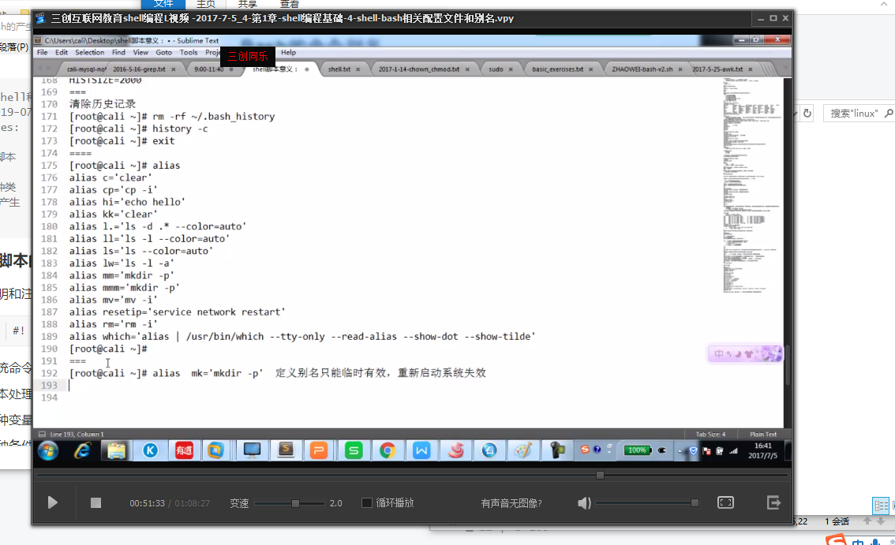

shell脚本的基本组成
声明和注释（注释以#开头）
1
! /bin/bash #是声明这个脚本是使用bash来执行的
系统命令
文本处理工具（grep、cut、sed、awk）
各种变量
各种条件判断
循环结构语句
各种函数
shell的作用：命令解释器，介于系统内核与用户之间，负责解释命令行
用户进程和系统进程
用户进程：用来实现具体的某个功能应用的程序，为用户提供服务的程序。mysq1、lkdir等
系统进程：其实就是操作系统本身内部的代码运行的进程。
0.0%us：用户进程所消耗的cpu资源
0.3%sy：系统进程所消耗的cpu资源
1
0.0 us, 0.3 sy, 0.0 ni, 99.7 id, 0.0 wa, 0.0 hi, 0.0 si, 0.0 st
用户态：一般都是普通的应用程序的状态
内核态：就是操作系统内核代码运行的程序的状态
编译型语言：编写-编译-链接-运行（edit-complie-link-run）
- C\C++、Ada、Java、C#
脚本语言：解释器读入脚本程序代码，将其装换成内部的形式，解释器本身则是编译型程序
Shell脚本编程的优势
- 语法和结构通常比较简单
- 学习和使用通常比较简单
- 通常以容易修改程序的“解释”作为运行方式，而不要“编译”
登录Shell：指用户每次登录系统后自动加载的Shell程序，大多数Linux系统采用/bin/bash作为默认登录Shell
/etc/shells 文件记录了系统支持的有效登录Shell
1
2
3
4
5
6
7[root@chenxl ~]# cat /etc/shells
/bin/sh
/bin/bash
/sbin/nologin
/usr/bin/sh
/usr/bin/bash
/usr/sbin/nologin
如何切换Shell环境
- 临时切换：直接执行其他shell程序
- 返回到原来的shell环境时可以执行“exit”命令或者按ctrl+D快捷键
- 更换用户登录Shell：
- 需要修改
/etc/passwd文件中用户记录的最后一个字段 - 或执行：
usermod -s Shell程序路径 用户名
- 需要修改
bash初始化：用户登录后到linux系统里，linux系统就会启动一个进程叫bash，然后我们在bash里输入命令，让bash帮我们去查找并执行
- 直接登录
- 远程登录：xshell软件、secureCRT
- bash初始化：启动bash这个程序的时候，需要去执行一些操作，加载某些参数或者函数
w命令
show who is logged on and what they are doing.
1
2
3
4
5
6[root@chenxl ~]# w
20:12:22 up 2:49, 3 users, load average: 0.15, 0.05, 0.06
USER TTY FROM LOGIN@ IDLE JCPU PCPU WHAT
root tty1 256月19 25:18 0.11s 0.11s -bash
root pts/0 192.168.0.48 276月19 8days 0.01s 0.01s -bash
root pts/1 192.168.0.58 19:48 6.00s 0.04s 0.00s wps aux静态的查看进程
pstree 查看进程树
top命令
- 动态的查看进程的信息每隔2秒刷新一次
- 大写的P：根据cpu的使用率来排序 processor
- 大写M：根据内存的使用率来排序 memory
- 按q：退出quit
- shift+>：下一页的进程信息
- shift+<：上一页的进程信息
Shell启动配置文件的区别
- /etc/profile：配置全局环境变量，影响所有用户
- ~/.bash_profile：配置个人环境，影响一个用户
- /etc/bashrc：配置全局的别名或者shell选项，影响所有用户
- ~/.bashrc：配置个人别名或者shell选项，影响一个用户
- 在用户家目录下，每个目录都有的配置文件，只对单独的用户有效。
- .bash_profile:用户每次登录时执行—>.bashrc
- .bashrc：每次进入新的Bash环境时执行（打开终端），定义别名，—>/etc/bashrc
- .bash_logout：用户每次退出登录时执行
- .bash_history：保存上次用户注销前使用的命令
环境变量：全局变量，所有人都可以使用的变量
命令历史
- 保存用户曾经执行过的命令操作
- 存放位置：~/.bash_history文件
history:查看历史命令
使用上下箭头按键逐条翻看，允许编辑并重复执行
清除历史命令：
history -c(只是将加载到内存的历史命令清除)最有效的全部清除（磁盘里的历史记录也一起清空）
- 先
rm -rf ~/.bash_history - 在
history -c exit
- 先
调用历史命令
- !n：执行历史记录中的的第n条命令
- !str：执行历史记录中最近以”str”开头的命令
设置记录历史命令的条数
修改HISTSIZE参数（默认为1000条）
alias:Bash的命令别名
命令别名：为使用频率较高的复杂命令行设置简短的调用名称
存放位置：~/.bashrc
查看命令别名：格式：alias [别名]
设置命令别名
alias 别名='实际执行的命令'取消已设置的命令别名：
unalias 别名或者unalias -a
